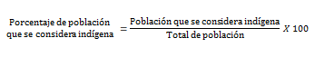
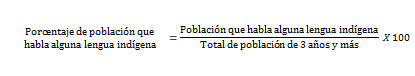
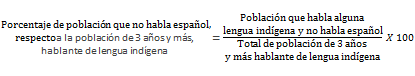
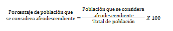

Población que de acuerdo con su cultura declaró considerarse indígena en relación con el total de la población, expresada por cada cien.
Población de 3 años y más que declaró hablar alguna lengua indígena en relación con el total de la población del mismo rango de edad, expresada por cada cien.
Población de 3 años y más que declaró hablar alguna lengua indígena y además declaró no hablar español, en relación con el total de la población del mismo rango de edad hablante de lengua indígena, expresada por cada cien.
Población que de acuerdo con su cultura, historia y tradiciones declaró considerarse afrodescendiente en relación con el total de población, expresada por cada cien.
Fuente:INEGI. Encuesta Intercensal 2015.
Nota:Los indicadores presentados son estimadores obtenidos a partir de la Encuesta Intercensal 2015.